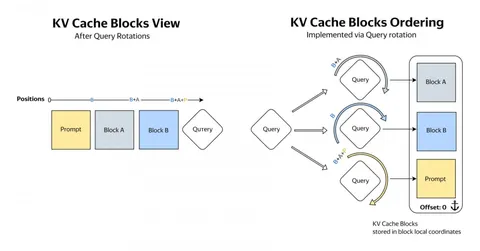

AI-ассистенты, роботы и другие агенты должны уметь получать новые данные прямо во время вычислений и корректировать свои действия на ходу без полного перезапуска. Исследователь Yandex Research Георгий Якушев в статье на Хабре рассказывает, как реализовать такую интерактивность во время инференса с помощью KV-кеша. Ниже коротко о главном.
В статье предлагают рассматривать KV‑кеш как активное состояние выполнения модели. Оно определяет, какие результаты предыдущих вычислений увидит новый запрос, в каком причинном порядке они расположены и какие промежуточные состояния могут повлиять на следующий токен. Если изменить структуру и доступность кеша, изменится и вычисление, которое выполняет модель, хотя её параметры и представления токенов останутся прежними.
Вместо одного длинного контекста, к которому последовательно дописывается ответ, можно хранить набор дополняемых блоков. Отдельные блоки соответствуют входящим сообщениям пользователя, внутреннему рассуждению, ответу агента, результатам вызова инструментов, визуальным наблюдениям или работе других субагентов. Разным процессам при этом доступны разные логические представления одних и тех же физических блоков.
Для моделей с RoPE это можно сделать без повторного кодирования и копирования всего кеша. Пусть ρ(x, i) обозначает применение поворота к вектору x в позиции i. Тогда произведение запроса и ключа можно записать так: ρ(q, i_q)ρ(k, i_k)⊤ = ρ(q, i_q − i_k)k⊤.
Блок кеша достаточно один раз сохранить в локальных координатах. Во время запроса attention kernel применяет к текущему query поворот, зависящий от конкретного блока. Один и тот же физический блок в разных потоках оказывается на разных логических позициях. Плоский append‑only‑тензор превращается в переиспользуемую память с несколькими представлениями.
Также в статье рассматриваются методы параллельного инференса: Hogwild! Inference и AsyncReasoning (мы, кстати, писали о первом тут, а о втором — тут). В Hogwild несколько экземпляров LLM выполняют одну задачу, синхронизируясь через KV-кеш. AsyncReasoning тоже предполагает использование двух потоков одной LLM: первый генерирует выходные токены, а второй — ризонинг. Благодаря этому модель может выдавать ответы раньше, чем завершаются рассуждения, при этом не жертвуя качеством.
А о том, как работают мультимодельные системы, как Qwen3.5 играет в Doom и какие ограничения есть у вычислений в несколько потоков — читайте в полной статье на Хабре. Оригинальный пост на английском языке — в блоге Yandex Research.
ML Underhood
